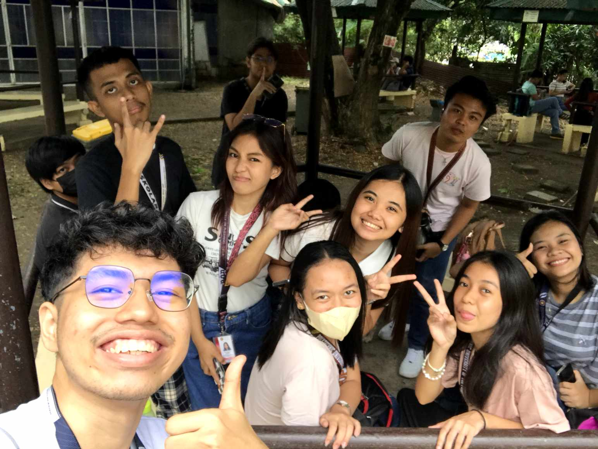
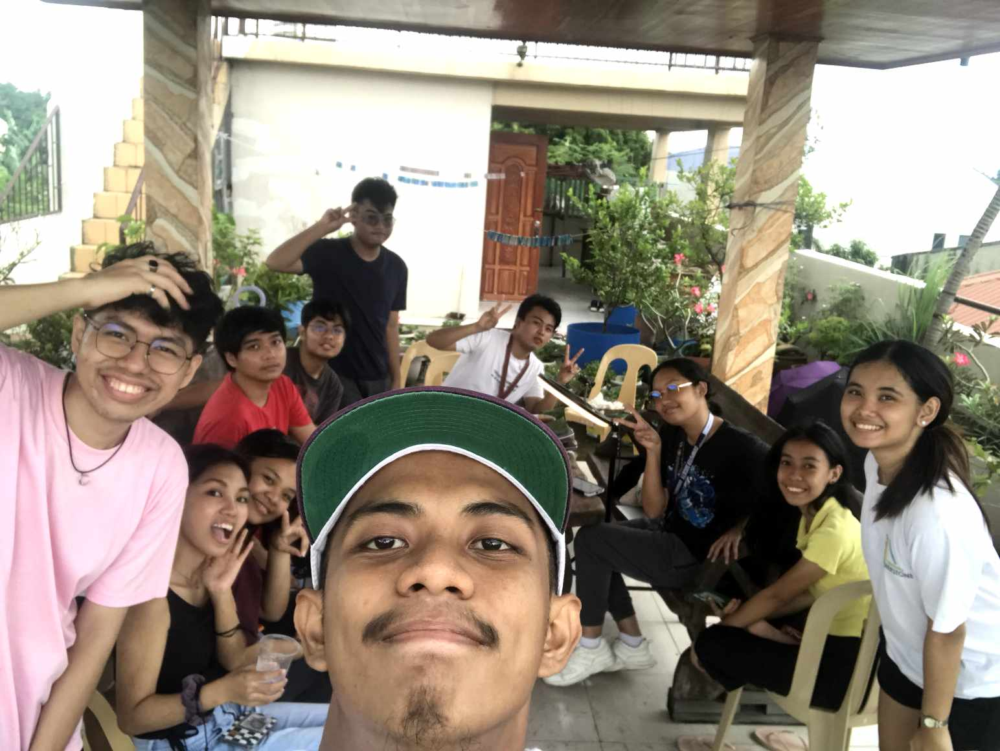
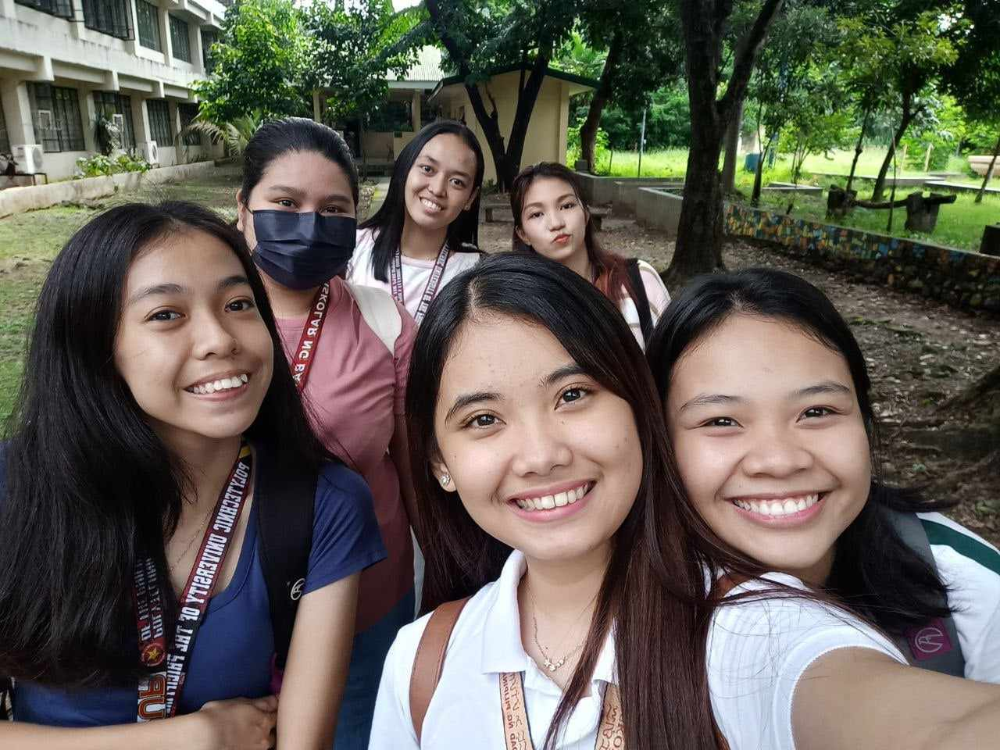
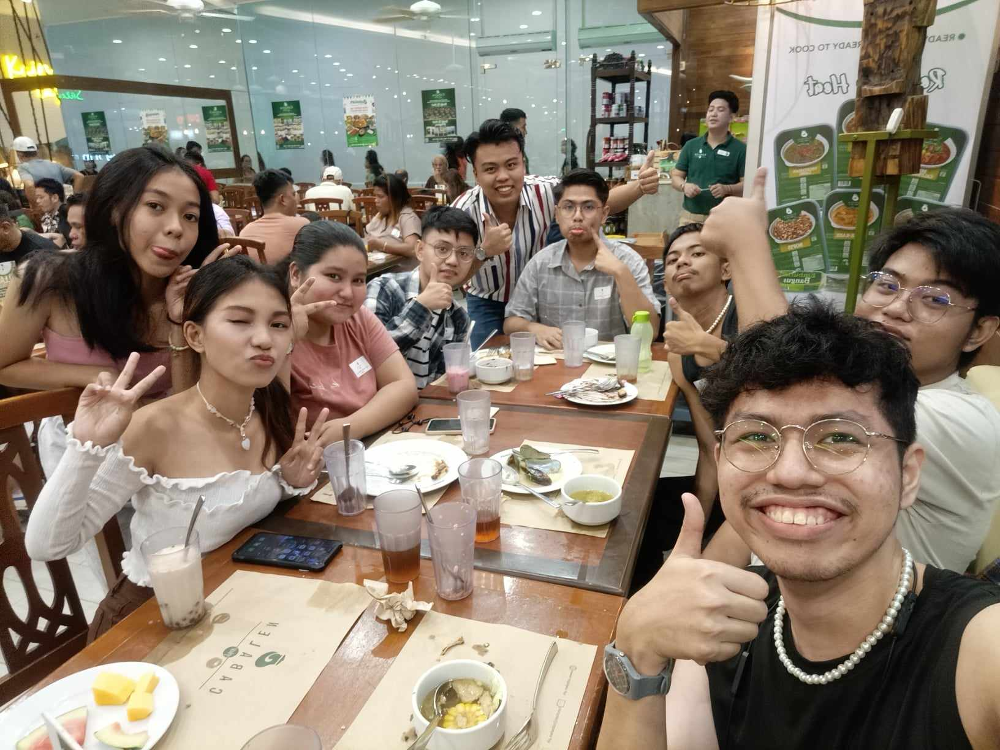
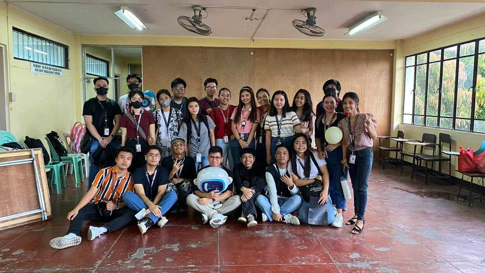

About Me
My Interests and Hobbies
- Watching K-Dramas
It helps me to escape from the real world.
- Reading some books
Sometimes, books can be just the warm, uplifting hug
feeling that you need in an otherwise crappy world.
- Painting
It can make me feel calm and relaxed.
- Cooking
When others enjoy what I have cooked and give comments
about the food, I feel overjoyed, proud, and
accomplished.
- Playing Badminton
It is the source of my energy.
Testimonials
See what others have to say about working with me:
"I had the pleasure of working with Kaila Marie on our
recent exercise. Her dedication, creativity, and
commitment to excellence were truly impressive. She
consistently went above and beyond to ensure our
exercise success, and I couldn't have asked for a
better group mate. I look forward to working with
her again in the future." - Cruz Simounne
Memorable Moments





Me after 5 years
As I sit down
to reflect on the person I will become in five years, I am
filled with a sense of wonder and excitement. On a personal
level, the person I will be in five years is shaped by the
lessons learned and challenges overcome. I see myself
evolving, not just in age but in wisdom and resilience.
The glimpses of
the industry that I've encountered, despite the stress and
pressure that accompanied them, have been invaluable in
shaping my perspective. The challenges were not roadblocks but
stepping stones, pushing me to stretch my capabilities and
discover reservoirs of resilience within myself. Each
sleepless night, every tight deadline, and the weight of
responsibility have been investments in a future that I am
passionate about.
As I reflect on
the past few months and brace myself for the upcoming weeks, I
recognize that the journey has not been easy, nor will it be.
However, the question of whether it's worth it is met with a
resounding "yes." The stress and pressure have been catalysts
for growth, shaping my resilience and determination. The
industry I'm entering, with its demands and fast pace, fuels
my desire to excel and evolve. I still want to be here because
it's not just a job; it's a journey of learning, innovation,
and personal fulfillment.
My Goals
Aspirations that drive me forward:
- Achieve success in life
- Make my parents proud of what I can become in the
future
- Maintain a healthy diet
- Improve my sleep quality
- Excel academically and get good grades
Personal Journal
Today, I took a moment to reflect on my
goals and aspirations. It's a journey filled with challenges,
but I believe in the path I've chosen.
I updated my goals, acknowledging the
changes in my desires and ambitions. It's crucial to adapt and
grow along the way.
The industry I glimpsed into excites
me, and despite the stress, I find fulfillment in the pursuit
of my dreams. I am committed to this journey, and yes, it's
worth it.